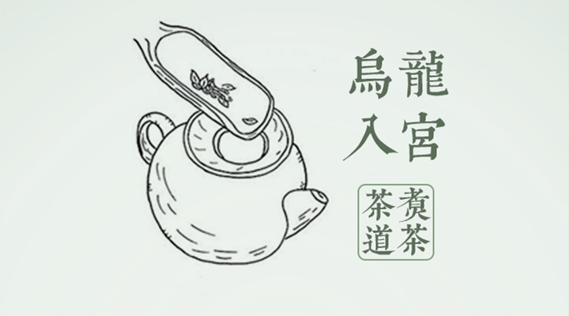
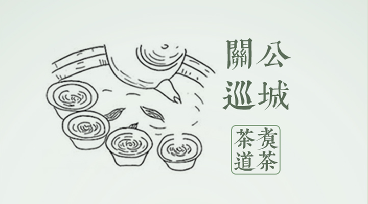
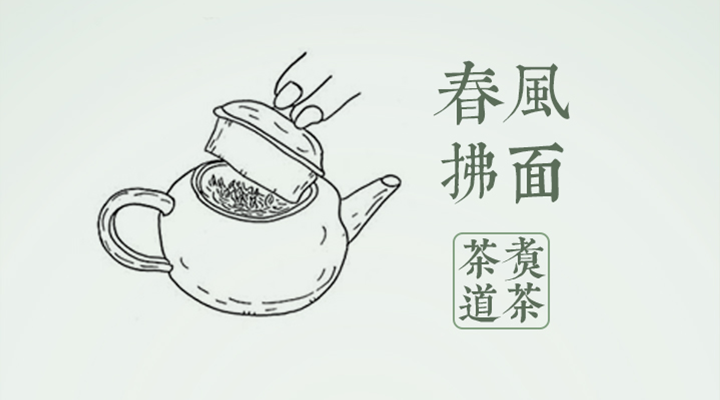
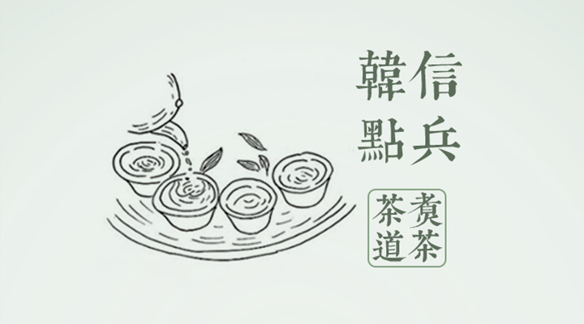
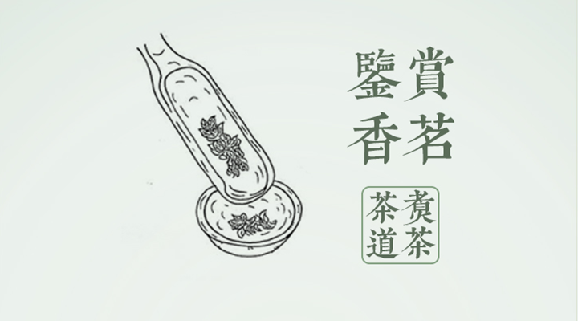

茶 道
茶道，就是品赏茶的美感之道。亦被视为一种烹茶饮茶的生活艺术，一种以茶为媒的生活礼仪，一种以茶修身的生活方式。它通过沏茶、赏茶、闻茶、饮茶、增进友谊，美心修德，学习礼法，领略传统美德，是很有益的一种和美仪式。喝茶能静心、静神，有助于陶冶情操、去除杂念。
工夫茶艺是广东省潮汕地区包括潮州、揭阳、汕头、汕尾等城市特有的传统饮茶习俗，是潮汕茶文化和潮州茶道重要组成部分。是中国茶艺中最具代表性的一种

工夫茶冲泡步骤中，投茶的步骤自古被雅称为“乌龙入宫”。乌龙指的是乌龙茶。传统上投茶除了有叫“乌龙入宫”之外，还有“观音入宫”的说法，即泡铁观音的时候这么说。

“关公巡城”在茶道中指的是依次来回向各客人杯中斟茶，茶壶便似巡城之关羽。
常常会先将各个小茶杯呈“一”字或“品”字、“田”字排开，采用来回提壶斟茶。使杯中茶汤浓淡一致，以免厚此薄彼，且低斟可以使香气不至于过多散失。

“春风拂面”指的是用茶壶盖或茶杯盖轻轻把茶水表面冒出的泡沫刮去，使茶水看起来更加美观，更具欣赏性。

“悬壶高冲”是指提起水壶，对准瓯杯，先低后高冲入，使茶叶随着水流旋转而充分舒展。悬壶高冲是因为冲泡讲究高冲水低斟茶。悬壶高冲，可以使茶叶在盖瓯中翻滚，促使早出香韵。

“韩信点兵”是以柔美的艺术姿态将壶中的最后数滴茶汤点滴入几个小茶杯里的操作艺术形式。继“关公巡城”之后，茶汤将尽，剩下的少许是从壶嘴一滴一滴向外滴时，仍需转着均匀地斟到每一盏中，这些是全壶茶汤中的精华，应一点一滴平均分注，因而戏称韩信点兵。

“鉴赏香茗”是指主泡师用茶则从茶仓中取出一壶量的茶叶，置于赏茶盘中，助泡接过赏茶盘，让客人鉴赏干茶，并介绍所用茶的特点。鉴赏香茗让客人能够更能了解茶叶的品种与味道，对茶文化进行深入的了解和品鉴。